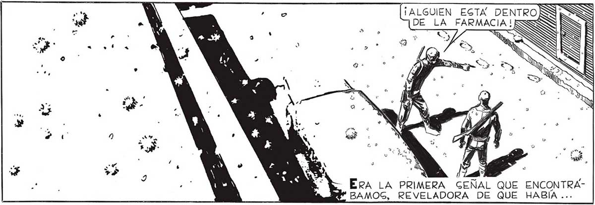
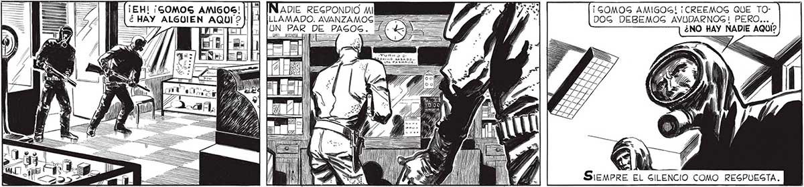

NO, JUAN. DEGPUÉG DE TODO] ¿ GABEMOG ACAGO QUE GE TRATA DE UN ENEMIGO? ES MUY POGIBLE QUE SEA UN TIPO COMO NOGOTROGS... | ¡EH! ¡GOMOS AMIGOG! N AQUÍ? y ==> SS == == === === === > === CON EL: A = as ! ; Ap E ¡A ' Mail BAMOG, REVELADORA DE DEBEMOG ENTRAR EN CONTACTO QUIZA PODAMOG AGOCIARLO A NUEGTRO GRUPO, Y NO TE PREOCUPEG POR MI, JUAN: Gl PAREZCO NERVIOSO EG PORQUE TODAVÍA NO ME HE ACOMONADIE REGPONDIO MI LLAMADO. AVANZAMOG UN PAR DE PAGOS 5 =, n| = sii palta E ] VW l == ¡ L GEÑAL QUE ENCONTRAQUE HABIA ... ENTREMOS, LUCAS, QUE EL TIEMPO CORRE. > a SN > A (Ps O Y DEGCUBRIO DE ... OTRO GOBREVIVIENTE COMO NOGOTROG. , GENTÍ UN PANICO IGUAL AL DE ROBINGON CUANDO, ALLA EN GU IGLA, LUCAS. PUEDE HABER PRONTO LA MARCA DE UNA PIGADA HUMANA, PORQUE UN GOBREVIVIENTE PODÍA GIGNIFICAR UN COMPETIDOR A MUERTE ... A c A - 9 5 Locas PARECIO NO OÍRM No Era el caco, a U ¡GOMOS AMIGOG! ¡CREEMOS QUE TO: DOG DEBEMOG AVUDARNOG! PERO... ¿NO HAY NADIE AQUI? =<y. > DEBEMOG EGTAR LISTOS, E, SIGUI MIRANDO LAS HUELLAS, COMO HIPNOTIZADO, COMPRENDI QUE CON GEMEJANTE COMPANERO NO PODIA YO HACER MUCHO. LA CERRADURA ESTA ROTA... ADENTRO, LUCAS. TEN LISTO EL RIFLE POR LAG DUDAS. TÁMPOCO, DE CONFIARGE DEMAGIADO.

